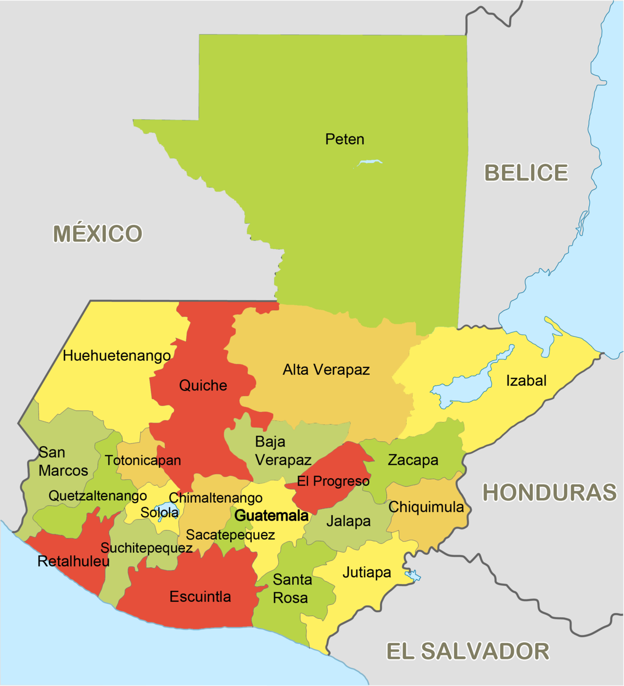

-

Departamentos de Guatemala
1. Alta Verapaz
2. Baja Verapaz
3. Chimaltenango
4. Chiquimula
5. Escuintla
6. Guatemala
7. Huehuetenango
8. Izabal
9. Jalapa
10. Jutiapa
11. Petén
12. El Progreso
13. Quetzaltenango
14. Quiché
15. Retalhuleu
16. Sacatepéquez
17. San Marcos
18. Santa Rosa
19. Sololá
20. Suchitepéquez
21. Totonicapán
22. Zacapa
Historia de Guatemala
Guatemala fue poblada por los españoles en el año 1524. La capital fue trasladada varias veces. Primeramente de Santiago de Tecpan a Ciudad Vieja, en el ano 1527; mas tarde, en 1543 a Antigua y finalmente a la Cuidad de Guatemala en 1773.
En 1821, Guatemala logro su independencia del dominio español. Sin embargo a raiz de inestabilidades de caracter interno, tanto en este país, como en todos los demas países de Centroamerica, excepto El Salvador, el mismo fue anexado a México en el año 1822, se logro dar formación a lo que de dio en llamar las Provincias Unidas de Centroamerica. En 1847, logro Guatemala, finalmente afirmar su independencia nacional, razon por la cual a partir de ese entonces, ha sido conocida como una republica totalmente separada del resto de las naciones centroamericanas.
La mayoria de la población, aproximadamente un 43%, son indios; el 1% mas o menos, son de pura ascedencia europea. El resto de los guatemaltecos se encuentran divididos de la siguiente manera: los ladinos osea una mezcla sanguinea de razas indias y caucasicas; algunos negros, los cuales viven epecialmente en los alrededores de los puertos de Barrios y Livingston y finalmente algunos mulatos (mezcla sanguinea de indios y negros), los cuales habitan preferentemente el litoral pacifico y las tierras bajas. Sin embargo, han existido muy pocos casamientos entre gente de las diferentes razas y los negros, a causa de una ley española que hizo que tales situaciones fueran ilegales. La mayoria de los negros existentes en Guatemala, son descediente de aquellos traidos desde Jamaica, para trabajar en las plantaciones.
Los indios se encuentran divididos en aproximadamente unos 20 grupos linguisticos, siendo los mas importantes de todos ellos, los Maya, Quiche, Mam, Pocomam, Chol y Caribe. En la mayoria de los casos han retenido sus practicas y ritos paganos, aun cuando hayan aceptado el catolicismo.
Los registros de origen indio, son practicamente inexistentes, ya que los españoles los quemaron durante la época de la conquista, con la esperanza de convertir a los indigenas al cristianismo mas rapidamente. Los pocos registros que de ellos existen, hacen posible extender las líneas reales de los indios, por varias generaciones, pero la mayoria de estas líneas son solamente confusos relatos basados en tradiciones indias. Algunos de estos registros, a los cuales se suponia que habian sido quemados durante la conquista, se encuentran en los archivos del Vaticano.
Símbolos Patrios
Bandera
La Bandera de Guatemala es un rectángulo, con las dimensiones proporcionales vertical y horizontal, los colores serán el azul-cielo y el blanco dispuestos en tres fajas verticales, quedando la blanca en el centro y donde llevará el escudo de Armas de la República, el color blanco representa paz, integridad, firmeza y luz; el color azul expresa fortaleza, justicia, verdad y lealtad.
Escudo
Los símbolos representados en el Escudo de Armas: Las espadas simbolizas justicia y soberanía; las ramas de laurel victoria; el pergamino, inmortalidad de la fecha del nacimiento de la Patria y el Quetzal es el símbolo de la libertad. Los rifles Remington de la época de su creación (1871), se representan con bayonetas triangulares, caladas de perfil con el guardamonte hacia abajo y entrecruzados en ángulo recto, en el centro del escudo.
Las ramas de laurel se representan al natural con frutos, enlazando las armas, entrecruzadas en la parte inferior y sin atadura alguna la hojas inferiores de las ramas enlazan con las empuñaduras de las espadas y las subsiguientes con las culatas de los rifles, y las últimas en el extremo superior, con las bayonetas.
El pergamino va desenrollado en el centro del escudo sobre el cruce de los rifles tiene una vuelta y media hacia el frente de la parte superior y una vuelta y media el reverso en el inferior descansando ésta sobre las hojas de las espadas. Centrada en el pergamino figura la siguiente leyenda en letras mayúsculas color oro, en cuatro líneas en la primera LIBERTAD, en la segunda 15 de, en la tercera SEPTIEMBRE y en la cuarta de 1821. En la parte superior del pergamino posa el Quetzal, las plumas de la cola más largas pasan sobre las armas del lado correspondiente y sobrepasa ligeramente las hojas inferiores del laurel. Cuando el escudo figura en la bandera, éste se llama Pabellón Nacional.
Ave Nacional (Quetzal)
El quetzal, cuyo nombre científico es Pharomachrus mocinno, fue declarada ave símbolo de Guatemala en noviembre de 1871, por lo que se encuentra al centro de la bandera nacional y de la moneda nacional que lleva su nombre.
Marimba
Uno de los sonidos más característicos y representativos de Guatemala es emitido por un símbolo patrio:la marimba.
Se estableció como instrumento nacional en 1978, pero fue hasta 1999 que se instauró como símbolo patrio.
Arbol Nacional (La Ceiba)
Fue en 1955, cuando el Presidente de la República, Coronel Carlos Castillo Armas, declaró a la Ceiba, como árbol nacional, dada la importancia que este árbol tiene para los guatemaltecos desde la época precolombina, ya que para los mayas prehispánicos, la Ceiba representaba el árbol que sostiene el universo y le consideraban símbolo de sabiduría y resistencia.
Flor Nacional (Monja Blanca)
La Monja Blanca es el nombre que recibe la flor nacional de Guatemala, declarada así desde el año de 1934. Técnicamente se identifica como una forma semialbina de la especie Lycaste virginalis.
Héroe Nacional (Tecún Umán)
El Congreso de la República declaró a Tecún Umán Héroe nacional y símbolo de la nacionalidad guatemalteca, por el decreto 1344, del 22 de marzo de 1960, y dispuso el 20 de febrero para honrar su memoria.
Himno Nacional de Guatemala
LETRA
¡Guatemala feliz…! que tus aras
no profane jamás el verdugo;
ni haya esclavos que laman el yugo
ni tiranos que escupan tu faz.
Si mañana tu suelo sagrado
lo amenaza invasión extranjera,
libre al viento tu hermosa bandera
a vencer o a morir llamará.
Libre al viento tu hermosa bandera
a vencer o a morir llamará;
que tu pueblo con ánima fiera
antes muerto que esclavo será.
De tus viejas y duras cadenas
tú forjaste con mano iracunda,
el arado que el suelo fecunda
y la espada que salva el honor.
Nuestros padres lucharon un día
encendidos en patrio ardimiento,
y lograron sin choque sangriento
colocarte en un trono de amor.
Y lograron sin choque sangriento
colocarte en un trono de amor,
que de patria en enérgico acento
dieron vida al ideal redentor.
Es tu enseña pedazo de cielo
en que prende una nube su albura,
y ¡ay! de aquel que con ciega locura
sus colores pretenda manchar.
Pues tus hijos valientes y altivos,
que veneran la paz cual presea,
nunca esquivan la ruda pelea
si defienden su tierra y su hogar.
Nunca esquivan la ruda pelea
si defienden su tierra y su hogar,
que es tan solo el honor su alma idea
y el altar de la patria su altar.
Recostada en el Ande soberbio,
de dos mares al ruido sonoro,
bajo el ala de grana y de oro
te adormeces del bello quetzal.
Ave indiana que vive en tu escudo,
paladión que protege tu suelo;
¡ojalá que remonte su vuelo,
más que el cóndor y el águila real!
¡Ojalá que remonte su vuelo,
más que el cóndor y el águila real!
y en sus alas levante hasta el cielo,
Guatemala tu nombre inmortal.
¿Quieres visitar Guatemala? Te dejamos una guía de turismo en la que puedes consultar la amplia gama de lugares que puedes conocer.
Has clic aquí.